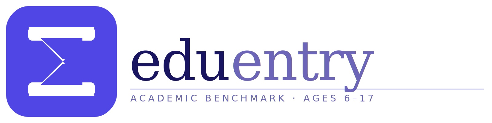

Geçen ay Dubai'de bir veliler toplantısındaydım. Masa başında oturan sekiz ailenin dördü aynı soruyu sormaya çalışıyordu: "Çocuğum büyüdüğünde ne iş yapacak?" Bu soruya basit bir cevap bekliyorlardı. Ben de onlara şunu söyledim: Cevabı bilmiyoruz. Ama veriler inanılmaz derecede net ipuçları veriyor — ve bu ipuçları okul seçiminizi doğrudan etkiliyor.
Yapay zeka, iklim krizi, biyoteknoloji devrimi ve dijital ekonomi aynı anda dönüşüm geçiriyor. Bu dört dalga birden çarparken çocuğunuzun hangi becerileri, hangi müfredatla geliştireceği; 10-15 yıl sonrasını belirleyen en kritik karar haline geliyor.
Rakamlar Yanlış Söylemiyor
Küresel kuruluşların son raporları örtüşüyor: iş dünyası hiç bu kadar hızlı dönüşmemişti. Şu verilere bakın:
- WEF Future of Jobs 2025: 2030'a kadar 170 milyon yeni iş yaratılacak, 92 milyon iş ise büyük dönüşüme uğrayacak.
- WEF: Bugün ilkokula giden çocukların yüzde 60'ı, henüz var olmayan mesleklerde çalışacak.
- McKinsey Global Institute: 375 milyon çalışan 2030'a kadar meslek kategorisi değiştirebilir.
- LinkedIn Skills Report 2024: İş ilanlarında aranan becerilerin yüzde 25'i 2015'ten bu yana değişti; 2027'de bu oran yüzde 65'e ulaşabilir.
- IMF (2024): Yapay zeka küresel işlerin yüzde 40'ını etkileyebilir.
Bu rakamlar bir felaket senaryosu değil. Tam tersine: nereye yatırım yapılacağını gösteren bir yol haritası. Sorun şu: çoğu aile bu verileri takip etmiyor, kariyer planlamasını ise "çocuğum büyüyünce ne olmak ister" sorusuna bırakıyor. Bu yaklaşım artık yeterli değil.
2030'da Öne Çıkacak 7 Meslek Grubu
WEF ve McKinsey raporlarını öne çıkan büyüme sektörleriyle birleştirdiğimizde, yüksek talep göreceği net olan 7 alan beliriyor:
| Meslek Grubu | Neden Önem Kazanıyor | Büyüme Tahmini (WEF) |
|---|---|---|
| Yapay Zeka & Veri Bilimi | Otomasyon çağının motoru; her sektörde temel altyapı | +30–40% |
| Siber Güvenlik | Dijital altyapının korunması; artan siber tehdit ortamı | +35% |
| Yeşil Enerji & Sürdürülebilirlik | İklim krizi zorunluluğu; karbonsuzlaşma hedefleri | +24% |
| Sağlık & Biyoteknoloji | Yaşlanan nüfus, pandemi sonrası sağlık yatırımları | +20% |
| Eğitim & Koçluk | Yapay zekanın dolduramadığı insan bağlantısı ve empati | +15% |
| Yaratıcı Ekonomi & UX | İnsan bakış açısının geri dönüşü; içerik, tasarım, deneyim | +18% |
| Robotik & Otomasyon Mühendisliği | Üretim ve lojistikte teknoloji dönüşümü | +28% |
Bu yedi alan birbirine bağlı. Siber güvenlik uzmanı matematiksel akıl yürütme ve eleştirel düşünme istiyor. Yeşil enerji mühendisi veri analizi ve mühendislik biliyor olmalı. Yaratıcı ekonomi uzmanı hem analitik hem de insan odaklı düşünebilmeli. Ortak payda: üst düzey bilişsel beceriler.
Hangi Beceriler Gerçekten Önemli?
WEF'in 2025 yılı için belirlediği en kritik beceri seti ile risk altındaki beceriler yan yana bakıldığında tablo netleşiyor:
- Analitik düşünme ve problem çözme
- Yaratıcılık ve özgün fikir üretme
- Esneklik ve değişime uyum
- Yapay zeka okuryazarlığı
- Eleştirel düşünme
- Liderlik ve sosyal etki
- Merak ve öğrenmeye açıklık
- Tekrarlayan veri girişi ve işleme
- Rutin muhasebe ve kayıt tutma
- Standart metin çevirisi
- Basit raporlama ve özetleme
- Kurallara dayalı karar verme
- Öngörülebilir üretim görevleri
Dikkat edin: "risk altındaki" beceriler çoğu okulun hâlâ yoğun biçimde öğrettiği şeyler. Standart test hazırlığı, ezber, prosedür takibi. Eğer çocuğunuz bu becerileri geliştirmek için yıllarca eğitim alıyorsa, gelecekte rekabetçi olacağı bir beceri setinden yoksun büyümesi riski var.
Uluslararası Müfredat Bu Tabloyu Nasıl Değiştiriyor?
Burada devreye uluslararası müfredat seçimi giriyor. IB (Uluslararası Bakalorya) ve A-Level programları, ulusal müfredatlardan özünde farklı bir şey öğretiyor: nasıl düşünüleceğini.
IB'nin TOK (Theory of Knowledge) dersi çocuğunuza "bu bilgiyi nereden biliyoruz?" diye sormayı öğretiyor. Extended Essay bileşeni 4.000 kelimelik bağımsız araştırma gerektiriyor. A-Level'in derinlik odaklı yapısı, bir konuyu gerçekten uzmanlaşma düzeyinde kavramayı zorunlu kılıyor. Amerikan AP sistemi ise birden fazla alanda üst düzey performansı test ediyor.
Bunların tamamı, WEF'in kritik gördüğü becerileri — analitik düşünme, eleştirel değerlendirme, problem çözme — doğrudan geliştiriyor. Standart ulusal müfredatların büyük çoğunluğu ise henüz bu dönüşümü yeterince içselleştirmedi.
Bu yüzden okul seçimi yalnızca "iyi okul" meselesi değil: hangi düşünme alışkanlıklarını kazandırdığı meselesi. Bu konuda profesyonel bir perspektif almak istiyorsanız uluslararası okul danışmanlığı sayfamıza göz atabilirsiniz.
Çocuğunuz Bu Mesleklere Hazır mı?
Bu mesleklerin temeli matematikte, sözel akıl yürütmede ve İngilizce yetkinliğinde yatıyor — ve bunlar ölçülebilir. Çocuğunuzun bugün bu temellerde nerede durduğunu bilmeden müfredat veya okul kararı vermek, haritasız yola çıkmak gibi.
Eduentry, bu boşluğu tam olarak kapatıyor: 6-17 yaş arası çocuklara yönelik, PISA ile aynı 2PL IRT metodolojisini kullanan adaptif bir değerlendirme. İngilizce (okuduğunu anlama, dilbilgisi, kelime hazinesi), Matematik, Sözel Akıl Yürütme ve Sözel Olmayan Akıl Yürütme alanlarını ölçüyor; sonuçları UK, ABD, PISA ve IB çerçevelerine göre konumlandırıyor.

Çocuğunuzun akademik profilini uluslararası çerçevelere göre ölçün
Ücretsiz, kayıt gerektiren, 60–90 dakikalık adaptif test. PISA ile aynı 2PL IRT metodolojisi.
Eduentry hakkında daha fazla bilgi için bu yazımızı okuyabilirsiniz.
Kararlarınızda Yapay Zekayla Düşünün
Hangi müfredatı seçmeli? Hangi ülkede okul aranmalı? Çocuğumun profili için A-Level mi IB mi daha uygun? Bu soruların cevabı her aile için farklı — ve her sorunun ardında kişiselleştirilmiş bir analiz gerekiyor. Edualist'teki Ela, bu soruları yanıtlamak için 7/24 hazır bir yapay zeka danışmanı. Site sayfalarının sağ alt köşesindeki EduBot butonuna tıklayarak hemen konuşmaya başlayabilirsiniz. Okul seçimi sorularınızda, müfredat karşılaştırmalarında ve ülkeye özgü yönlendirmelerde size özel, anlık yanıtlar veriyor.
Aile Olarak Şimdiden Yapabilecekleriniz
- Müfredat seçerken "eleştirel düşünce ve problem çözme" ağırlığını sorgulayın — bu, o müfredatın ne kadar gelecek odaklı olduğunu gösteren en önemli gösterge.
- Çocuğunuzun uluslararası akademik profilini ölçün — Eduentry ile ücretsiz.
- Dil yatırımını erken yapın: yapay zeka çevirebilir, ama analiz, bağlam kurma ve sözlü ikna insana ait kalmaya devam edecek.
- Okul seçimini kariyer unvanıyla değil, beceri seti hedefiyle yapın — meslek adları değişiyor, ama analitik kapasite ve yaratıcılık değişmiyor.